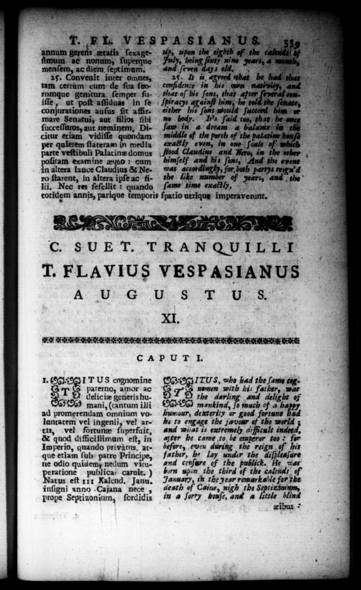

PS. * * eee, r de i eons Ea Ins SY YT 05 aa. 1. 1 L VESPASIANUS 3 annum gereils ztatis ſexageum ac nonum, ſuperque menſem, ac diem ſeptimum. 25. Convenit inter omnes, tam certum cum de ſua ſuorumque genitura ſemper fu conjurationes auſus fit affirmare Senatui, aut filivs ſibi ſucceſſuros, aut neminem, Dicicur etiam vidiſſe quondam per quietem ſtateram in media parte veſtibuli Palatinz domus * examine æquo: cum altera lance Claudius & Nero ſtarent, in altera ipſe ac filii. Nec res fefellit: quando that oſ his ſons, that iſle, ut poſt aſſiduas in ſe „being ſixty nine s, 4 month, ay ys old, 2 F | * 1. agreed that be hace a c ner in his n ani, after 72 — Spiracys againſt him, he the ſenate, either his ſons would ſucceed bin or no bedy. T's ſaid too, that be once ſaw in 4 dream 4 balanite''in the middle of the porch of the palatine houſe exactly even, in one ſcale of which Claudius and Nero, in the wther 2 upon the eighth of the calends| bf and 1 and his ſons, Aud the epent was accordingly, for both partys ren A the Like — of Ms 2 N ſame time exattly, * ; totidem annis, parique temporis ſpatio utriqug imperaverunt. T. FLAVIUS VESPASIANUS A U 6+ Þ-8. 4:5. XI. | CAPUT I. 1. T US cognomine paterno, amor ac T delic iæ generis humani, (cantum illi ad promerendam omnium volantatem vel ingenii, vel artis, vel fortune ſuperfuit, & quod difficillimum eſt, in Imperio, quando privatns, atque etiam ſub patre Principe, ne odio quidem nedum vitu—— publica. caruit.) atus eſt 111 Kalend, Janu. inſigni anno .Cajana nece , prope Septizonium, fordidis the darling and delight of mankind, Jo much of 4 72 humour, dexterity or good fortune bad ha to engage the favour of the world and what is extremely a:frcult indeed, after he came to be emperor too * for before, even during the reign f his father, h. lay under the diſpleaſure and cenſure of the publick. He was born upen the third of the caltnds of January, th the year remarkable for the ITUS, who had the 72 878 nomen with his 72 — ( death of Caius, nigh the Septix imm, in a ſorty houſe, and a little blind | . zibus ©
